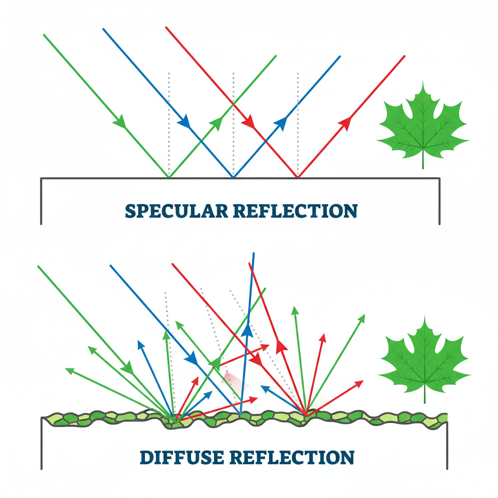

🌈 අපි අවට ලෝකය වර්ණවත් වන්නේ කොහොමද?
අපි අවට පරිසරය තුල විවිධාකාර වර්ණ වලින් හැඩගැන්වුනු වස්තූන් අපි දකිනවා. සමහර පෘෂ්ඨ දිලිසෙනවා. සමහර පෘෂ්ඨ එහෙම නැහැ. සමහර පෘෂ්ඨ දිහා වෙනස් දිශාවන් වලින් බලද්දි වර්ණය වෙනස් වෙනවා. මොකක්ද මේකට හේතුව කියලා ටිකක් හොයලා බලමු.
0.1 ☀️ මොකක්ද මේ සුදු ආලෝකය??
අපි දන්නවා අපිට ස්වභාවිකව ආලෝකය ලැබැන්නෙ සූර්යයාගෙන්. මේ සූර්යයාගෙන් ලැබෙන ආලෝකය ප්රිස්මයක් හරහා යැව්වම අපිට ලැබෙනවා සූර්ය ආලෝකයේ වර්ණාවලිය. අපි සාමාන්යයෙන් කියන්නෙ වර්ණ හතක් කියලා. ඇත්තටම මෙතන තියෙන්නෙ සන්තතික (Continuous) වර්ණාවලියක්. ඒ කියන්නෙ අපිට නොපෙනෙන අධෝරක්ත (IR), දෘෂ්ය ආලෝකය (Visible light) සහ පාරජම්බුල කිරණ (UV) කියන පරාස තුන ඇතුලෙ පවතින විවිධ තරංග ආයාම ගොඩකින් සමන්විත වෙච්ච ෆෝටෝන වල පොකුරක් තමයි අපි සුදු ආලෝකය විදියට දකින්නෙ. ඒ කියන්නෙ ඇත්තටම නිකං සරල වචනයෙන් කියනවනම් පාට ගොඩක එකතුවක්.
0.2 👁️ කොහොමද අපිට යම් වස්තුවක් පේන්නෙ?
කලුවර වෙලාවකට ඇයි අපිට අපි අවට කිසි දෙයක් පේන්නෙ නැත්තෙ? ඇයි අපිට දෙයක් පේන්න නම් මොකක් හරි ආලෝක ප්රභවයක් අවශ්යය වෙන්නෙ? අපි මේ ප්රශ්න ගැන කතාකරමු.
අපිට යමක් පේන්න නම්, ඒ වස්තුවෙන් අපේ ඇහැට ආලෝක කිරණක් (ෆෝටෝන ටිකක්) එන්න ඕනෙ. හැබැයි හැම වස්තුවම ආලෝකය නිකුත් කරන්නෙ නැහැ. මෙතනදි වෙන්නෙ ආලෝක ප්රභවයකින් අදාල වස්තුවට වැටෙන ආලෝකය අපේ ඇහැ වෙත පරාවර්තනය කරන එක. එතකොට තමයි අපිට ඒ වස්තුව පේන්නෙ. කලුවරේදි කිසිම ආලෝක ප්රභවයක් නෑ. ඒ කියන්නෙ අර වස්තුව මතට කිසිම ආලෝකයක් වැටෙන්නෙ නැහැ. එතකොට අපේ ඇහැට නැවත පරාවර්තනය වීමක් නැහැ.
0.3 🎨 කොහොමද යම් පෘෂ්ඨයකට වර්ණයක් ලැබෙන්නෙ?
යම් පෘෂ්ඨයක් මතට ෆෝටෝනයක් වැටුනම දේවල් දෙකක් වෙන්න පුලුවන්. එකක් ඒ ෆෝටෝන අදාල පෘෂ්ඨය මගින් අවශෝෂණය (Absorption) කරගැනීම. අනික ඒ ෆෝටෝනය අදාල පෘෂ්ඨය මගින් පරාවර්තනය (Reflection) කිරීම. දැන් බලමු කොහොමද මේක වෙන්නෙ කියලා.
පරාවර්තනය එහෙම නැත්නම් reflection වල කොටස් දෙකක් තියෙනවා: Specular reflection සහ Diffuse reflection. Specular reflection වලදී වෙන්නේ පෘෂ්ඨට වැටෙන ආලෝකය කෙලින්ම නියත දිශාවක් සහිතව පරාවර්තනය කිරීම. අපි ලෝහ තහඩු මගින්, කන්නඩි වලින් දකින්නේ මේ specular reflection. ගොඩක් සුමට පෘෂ්ඨ වල අපිට මේක දකින්න පුලුවන්.

Diffuse Reflection කියන්නේ ආලෝකය නියත දිශාවකින් තොරව විවිධ දිශාවලට විසිරී යාමයි. මෙහිදී පෘෂ්ඨයට වැටෙන ආලෝකයේ කොටසක් පරාවර්තනය වන අතර, තවත් කොටසක් එම පෘෂ්ඨය තුළට ඇතුළු වී (Transmission) ගමන් කරයි. මෙම ක්රියාවලිය Fresnel සමීකරණ භාවිතයෙන් පැහැදිලි කළ හැක. බොහෝ dielectric materials වලදී, Direct Reflection වලට වඩා Transmission ප්රබල ලෙස දැකගත හැක. මෙතනදි පෘෂ්ඨයට වැටෙන ආලෝකය අදාල පෘෂ්ඨය (වස්තුව) තුලට ඉතාම කුඩා දුරක් ගමන් කරනවා (Subsurface Scattering). මේ ගමන් කරන දුර වර්ණය (ෆෝටෝනයේ ශක්තිය) අනුව වෙනස් වෙනවා. ඒ වගේම, නැවත නැවත හැරී ගමන් කරලා පෘෂ්ඨයෙන් ඉවතට පිටවෙනවා. මෙතනදි පෘෂ්ඨයට වැටෙන ආලෝකය අදාල පෘෂ්ඨය (වස්තුව) තුලට ඉතාම කුඩා දුරක් ගමන් කරනවා.
දැන් මේ ගමන් කරන මාර්ගය ඇතුලෙ වස්තුව විසින් සමහර වර්ණ වලට අදාල සියල්ලම අවශෝෂණය කරගන්නවා, සමහර වර්ණ වලට අදාල ෆෝටෝන වලින් කොටසක් අවශෝෂණය කරගන්නවා. සරලවම මේ කාරණාව පෘෂ්ඨය හැදිලා තියෙන ද්රව්යයෙ රසායනික සංයුතිය මත පදනම් වෙනවා. මේකට අපි කියන්නෙ වරණීය අවශෝෂණය (Selective absorption) කියලා.
දැන් පෘෂ්ඨය විසින් අවශෝෂණය කරගත්තු නැති ෆෝටෝන තමයි අපේ ඇහැ වෙත එන්නෙ. සරලව අපේ ඇහැ අඳුනගන්නෙ ඒ ඇහැ වෙත එන ෆෝටෝන වලට අදාල වර්ණ. ඒ කියන්නෙ යම්කිසි වස්තුවකට වර්ණයක් ලැබෙන්නෙ ඒ වස්තුව විසින් පරාවර්තනය කරන ආලෝකයට අදාල වර්ණ වලින්. සරලවම උදාහරණයක් විදියට ගහක කොළයක් ගත්තම, සූර්යයාගෙන් වැටෙන සුදු ආලෝකයෙන් කොළ වර්ණයට අදාල ෆෝටෝන හැරුණ කොට අනික් වර්ණ වලට අදාල ෆෝටෝන කොළය විසින් (Chlorophyll විසින්) අවශෝෂණය කරගන්නවා.
0.4 ✨ ඇයි සමහර පෘෂ්ඨ දිලිසෙන්නෙ?
මේකට හේතුව කලින් කතා කරපු Specular reflection.
0.5 🦋 අපිට පෙනෙන වර්ණ වලට හේතුව මේ Selective absorption විතරමද??
සරලවම පිලිතුර නැහැ. මෙතනදි සොබාදහම විසින් නිර්මාණය කරපු හරි අපූරු ඉංජිනේරු නිර්මාණ ටිකක් බලාගන්න පුලුවන්. සමහර පෘෂ්ඨ වල පෘෂ්ඨ ස්වභාවය හරි විශේෂයි. උදාහරණයක් විදියට මොණර පිලක්, සමනලයෙක්ගෙ තටුවක් ගත්තොත් මේ පෘෂ්ඨ වල නැනෝ පරිමාණයේ විශේෂ ආකෘතිමය ස්වභාවයන් දකින්න පුලුවන්. මේවා වැඩකරනවා Wavelength selectors විදියට. ඒ කියන්නෙ ඒ ආකෘති වලින් සමහර වර්ණ තෝරලා reflect කරනවා. මේවා වැඩකරන්නෙ අපි Physics වල කතාකරන Multilayer Bragg reflectors විදියට.
සමනලයින්ගෙ තටු වල Periodic nanostructures තියෙනවා. ඒ කියන්නෙ එකම රටාවකට පෙලගැස්වුන ස්ථර වගේ. මේ ස්ථර වලට ආලෝකය වැටුනම පරාවර්තනය වෙන ආලෝකය Interference (නිරෝධනය) වීමක් සිද්ධ වෙනවා. අපි මේකට කියන්නෙ reflected interference කියලා. සරලව අපිට මේක Bragg condition වලින් පෙන්නන්න පුලුවන්:
\[n\lambda = 2d \sin \theta\]
අපි බලන කෝණය (\(\theta\)) වෙනස් වෙද්දි වර්ණය වෙනස් වෙන්නෙ මේ නිසා. අපි අවට තියෙන අපිට නිතර මුණගැහෙන පරිසරය ඇතුලෙ අපි නොදකින අපි නොහිතන කාරණා සෑහෙන්න තියෙනවා. තවත් කාරණා ඉදිරියට.